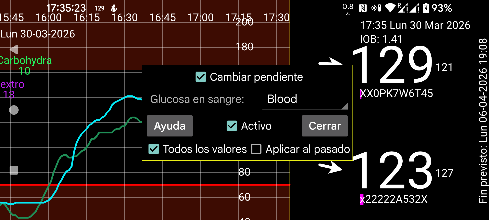

Juggluco 10.0.0 y versiones posteriores permiten calibrar sensores.
Glucosa en sangre: indica qué etiqueta corresponde a las mediciones capilares por punción. A partir de entonces, todos los valores de glucosa en sangre introducidos con esa etiqueta se usarán para la calibración, salvo cuando selecciones Excluir en menú central izquierdo → Cantidad. Cuando el cambio es demasiado grande en valor absoluto, se excluye automáticamente.
Excluye solo los valores de glucosa que no sean adecuados para calibrar porque la glucosa no está estable. No excluyas los demás valores, aunque pienses que el sensor no necesita calibración. Si no quieres calibrar, desactiva Activo y desmarca menú central derecho → Calibrado. Así se usarán para la calibración todos los valores relevantes y no solo los que no coinciden.
Cada nueva punción capilar que no se excluya genera una nueva calibración. Puedes ver las calibraciones creadas pulsando Calibraciones en la pantalla de información del sensor. Puedes abrir la información del sensor manteniendo pulsada la curva de glucosa o desde el menú izquierdo → Sensor. Las calibraciones son específicas de cada sensor.
Si Aplicar al pasado no está activado, los valores de glucosa se calibran usando la última calibración anterior a cada valor. Si está activado, la última calibración se aplica a todos los valores de ese sensor.
Cambiar pendiente:
Si Cambiar pendiente no está activado, solo se suma o resta una cantidad fija a cada valor de glucosa del sensor para obtener el valor calibrado. La relación es:
Glucosa calibrada = SensorGlucose + b
El valor de b se determina mediante la calibración.
Si Cambiar pendiente está activado, la relación pasa a ser:
Glucosa calibrada = a * SensorGlucose + b
donde a puede ser distinta de 1.
Juggluco pondera las mediciones de glucosa según su antigüedad. El valor actual tiene peso 1 y los valores más antiguos tienen menos peso. La propia calibración también se pondera, de modo que una calibración antigua influye menos: con el tiempo, a tiende a 1 y b tiende a 0.
El peso total de las mediciones capilares utilizadas determina cuánto peso recibe la calibración. Cuantas más mediciones recientes de glucosa en sangre haya, más se inclinan los valores calibrados hacia el mejor ajuste derivado de esas mediciones entre glucosa en sangre y glucosa CGM.
Los valores de History no pueden calibrarse inmediatamente en el momento de la medición. Su calibración está programada para realizarse 21 minutos después en sensores Libre y 31 minutos después en sensores CareSens Air, aunque a menudo ocurre más tarde. La calibración de Stream también se repite más adelante para que pueda usarse el siguiente valor CGM.
Activo:
Cuando Activo está marcado, los valores de glucosa calibrados se usan para alarmas, broadcasts, Health Connect, el servidor web Nightscout/xDrip de Juggluco, los valores enviados a relojes y la glucosa flotante. A la derecha de Juggluco se muestra en grande el valor calibrado y, detrás, en pequeño, el valor no calibrado. Este valor nunca se usa para el envío a Libreview ni se aplica a escaneos o a valores históricos.
La visualización de la curva de glucosa calibrada se activa en el menú central derecho, antes de Stream e History. Los valores brutos pueden activarse o desactivarse con la casilla situada después de Stream e History.
Todos los valores: en algunos valores no existe un valor calibrado. La curva de valores calibrados, activada con menú central derecho → Calibrado, no muestra nada si Todos los valores no está activado. Si sí está activado, se muestra el valor no calibrado. De esta forma puedes desactivar menú central derecho → Stream y seguir viendo todos los valores.